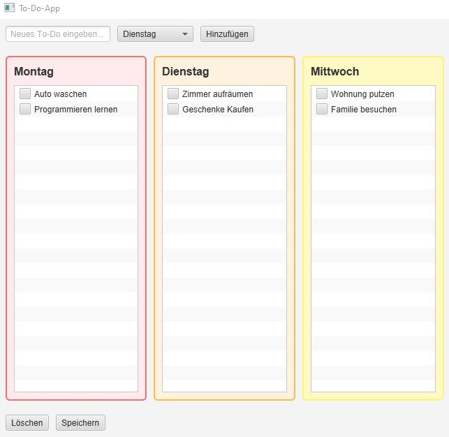

Hier finden Sie eine Auswahl meiner aktuellen Projekte und Arbeiten

Eine Desktop-Anwendung zur Verwaltung von Aufgaben mit grafischer Benutzeroberfläche. Die Anwendung ermöglicht es, Aufgaben nach Wochentagen zu organisieren und diese übersichtlich zu verwalten. Implementiert mit JavaFX und objektorientierter Programmierung.
Moderne, responsive Portfolio-Webseite mit Kontaktformular und Projektübersicht. Die Seite präsentiert meine Fähigkeiten, Projekte und Kontaktmöglichkeiten in einem ansprechenden Design. Entwickelt mit semantischem HTML5, CSS3 und JavaScript.
Ein Java-Konsolenprogramm zur Demonstration grundlegender Programmierkonzepte wie Schleifen, Arrays und Bedingungen.